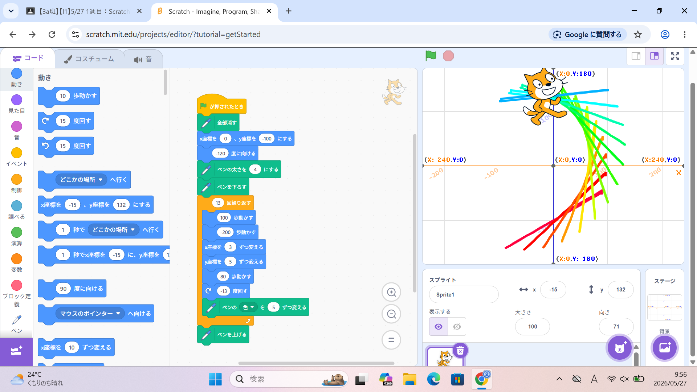
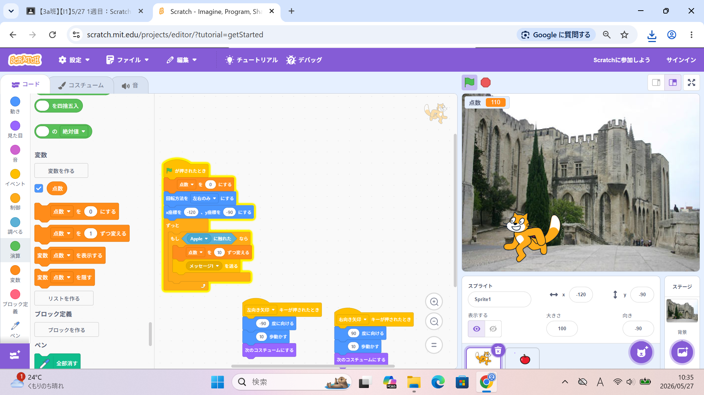

1週目のレポート ： 公大高専１年実習I-1
3a班11番 片山剛志
第1週目
1-1 サイエンスアート

1.内容
サイエンスアートというものを学習した。
これはペンの動きをプログラミングし、その跡でアートを表現するものである。
x軸とy軸からなる座標平面上にペンの位置を指定し、その軌跡を辿って
模様を作成することができる。
2.感想
ペンの太さや色、描き方を指定できるので様々な
模様を描くことができた。
少しでもプログラムの順番や、内容を間違えてしまうと
自分の予想したものと違うものが出来上がってしまう。
そのため、それぞれのブロックの性質への理解や
論知的な思考が必要になる。
1-2 ゲーム

1.内容
簡易的なゲームを作成した。
このゲームの内容は落ちてきたリンゴをキャラクターがキャッチして
得点を競うものである。
このゲームを作成するにあたって、リンゴがランダムな速さで落ちてくるプログラムと
キャラクターを手動で動かすプログラムを作成する必要がある。
こうすることでリンゴをキャッチする度に得点が増えるゲームを作成することができる。
2.感想
前回のサイエンスアートに比べて動きを予測しやすい内容なので、
スムーズにプログラミングすることができた。
その割には自分でカスタマイズできる部分が多く、
他の人との差別化を図ることができる点が良いと思った。
1-3 ホームページ作成
私のホームページ
1.内容
自分の自己紹介をホームページに載せた。
HTMLのコードの中に自己紹介のタイトルや本文を入力し、
それをアップすることでほかの人も見れるようにする。
2.感想
学習した内容を実践したときに自分が感じた感想を
自分で考えた文章で作成する（50文字以上．100文字程度を推奨．※生成AIを使ってはいけない）
各ページへのリンク
1週目のレポート
2週目のレポート
3週目のレポート
私のホームページ